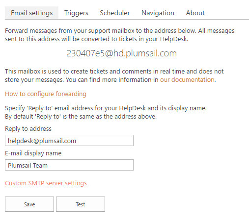
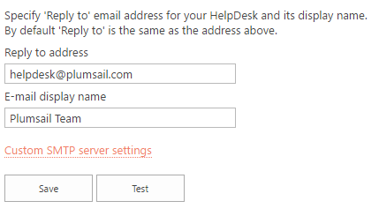

Quick HelpDesk configuration¶
Once HelpDesk has been installed you can start working with it straight away, no further configuration required. There are couple of things you may want to set up to make your life easier, however. You can:
- Forward messages from your support mailbox
- Change the reply address and email display name
- Create contacts for agents
Forward messages from your support mailbox¶
If you want to receive new tickets from your support email address you need to configure message forwarding. Navigate to HelpDesk settings using the icon in the navbar:

You will see the “Email settings” section.

Take a look at the email address in the Screenshot above. It was created automatically during HelpDesk installation.
If you send a message to this address, it will appear in HelpDesk as a new ticket. If you reply to this message directly or via HelpDesk, the reply will appear as a comment in the ticket discussion. This mailbox is used to create tickets and comments in real time and does not store your messages. You can find more information in this article.
You can use this address as the support email address of HelpDesk, but most likely you already have your own support e-mail address. That is why you may want to configure e-mail forwarding from your address to HelpDesk.
Create a rule in your mailbox to forward incoming email messages to HelpDesk address. Here is a list of instructions on how to set up e-mail forwarding for some of the most popular platforms:
Change the reply address and email display name¶
By default HelpDesk will use auto generated email address for sending notifications. You can specify your own “Reply to” address, so your customers will reply to your own support mailbox.
You also can specify a friendly display name for your email address. By default it is “HelpDesk”.

Create contacts for agents¶
HelpDesk has a place for storing contact details of your customers or agents. There are three types of contacts:
- Agent - SharePoint user that processes tickets.
- Member - SharePoint user that creates tickets.
- End-User - user without a SharePoint account that creates tickets by email.
If user sends email messages to HelpDesk, it creates a contact for such user automatically, but for agents you need to create contacts manually. Once you created an agent, you can start receiving notifications about new unassigned tickets.
To create a new contact, navigate to “Contacts” using the icon in the right navbar:
Then specify mandatory fields and submit the form.